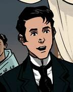
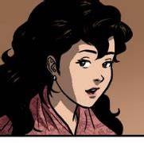
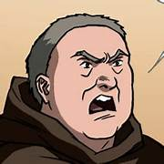
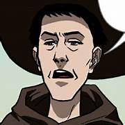
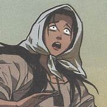
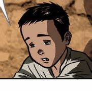
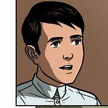

|  | Juan ChrisÓstomo Ibarra y Magsalin (Ibarra) | - Ibarra is young, wealthy mestizo who has recently returned to the Phillippines from seven years of study in Europe.
- He is smart, well-respected, and very idealistic.
|
|  | Maria Clara | - She is a woman of high social status and is believed to be father Dámaso's goddaughter as well as the daughter of Capitan Tiago.
- She is truly father Dámaso's biological child, the result of their scandalous relationship with Capitan Tiago's wife.
|
|  | Father Damaso | - Father Dámaso is an elderly, ruthlessly corrupt, and Spanish priest who has spent almost two decades residing among the native Filipinos.
- He has spent all that time among them, but the years have done nothing to endear him or give him any sympathy for his "flock".
- He is profoundly prejudiced, spiteful, and vengeful, and he has no problem using his immense influence to destroy people who have wronged him.
|
|  | Father Salvi | - Father Salvi is a parish priest in a town of San Diego.
- He loves Maria Clara, but she is already with someone else.
|
|  | Sisa | - She's the mother of Basilio and Crispin.
|
 | Don Rafael | - He is the father of Chrisostomo Ibarra.
- He was a rich man who helped a lot of people.
|
 | Capitan Tiyago | - Capitan Tiyago took care of Maria Clara, and is a very religious person.
|
 | Pilosopo Tasyo | - He is known for his wisdom and philosophical thinking.
|
|  | Crispin | - He is a young boy who works as an assistant in the church
|
|  | Basilio | - He is the older brother of Crispin and is a smart young boy who faces tough times after losing his parents.
|